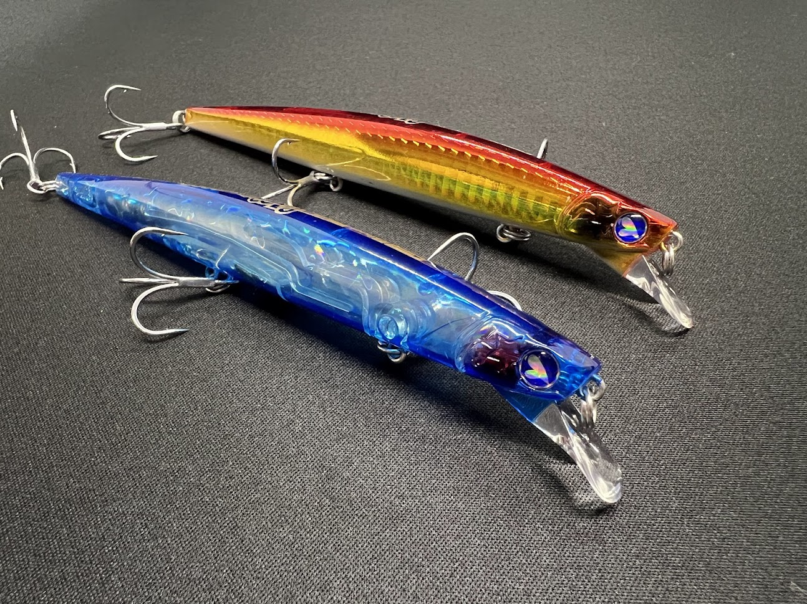

ブローウィン140F
（Blooowin!140F）
ブローウィン140F（Blooowin!140F）はBlueBlue（ブルーブルー）のフローティングミノーです。
「逆風を貫け! かっ飛びミノー!」のキャッチコピーで知られるブローウィンシリーズの140mmフローティングモデルで、これまでイベントでしか手に入らなかった限定ルアー。2026年には、ふるさと納税限定のウミホタルカラーも登場しました。
スペック
- メーカー
- BlueBlue（ブルーブルー）
- タイプ
- フローティングミノー
- 全長
- 140mm（モデル名より）
- 自重
- 公式サイトに記載なし
- ターゲット
- シーバス
- 入手方法
- イベント限定販売／ふるさと納税（千葉県館山市）の返礼品
- 寄付金額
- 13,000円（ふるさと納税・ウミホタルカラー1個）
- 発送
- 2026年12月1日から順次（ふるさと納税）
▼今すぐチェック

ブローウィン140Fの特徴
定番ブローウィン140の飛びを受け継ぐ、入手困難な限定フローティングモデル
-
「かっ飛びミノー」ブローウィンシリーズの140mmフローティング
ブローウィンシリーズは逆風でも飛ばせる遠投性能が持ち味のミノー。定番の140S（シンキング）・140J（ジャーキング）と同じ140mmクラスで、フローティングタイプとして展開されるのが140Fだ。
-
イベントでしか手に入らなかった限定モデル
通常ラインナップとしては公式サイトに掲載されておらず、これまではイベント会場でしか入手できなかったレアなモデル。提供元のブルーブルーによると、多くの釣果報告が寄せられている実釣性能の高い1本とされている。
-
ふるさと納税限定のウミホタルカラー
夜の海を幻想的に彩る「ウミホタル」をモチーフに、ふるさと納税の返礼品のためだけに特別デザインされたスペシャルカラーが登場。数量限定のため、コレクションとしても実釣用としても早めにチェックしておきたい。
ブローウィン140Fの使い方
詳細なアクションやレンジは公式に公開されていないため、ここではフローティングミノーとしての一般的な使い方を紹介する。基本はただ巻きで、ゆっくり巻いて表層〜表層直下をトレースする。
フローティングなので、リトリーブを止めればルアーが浮き上がり、流れに乗せてドリフトさせたり、シャローや障害物周りを根掛かりを避けながら通したりしやすい。遠投して広範囲を探りつつ、反応があったコースは巻き速度を落として丁寧に通すのが基本の組み立てです。
ブローウィン140Fの得意な状況
シンキングの140Sでは沈みすぎる浅場や、表層付近を意識している魚を狙う状況がフローティングモデルの出番。
河口やサーフなど風の影響を受けやすい場所で、140mmクラスのシルエットを遠くまで届けたい時にも選択肢に入る。手に入れられたら、ブローウィン140Sと使い分けたい1本です。
ワンポイント
流れのある場所では、アップクロスに投げてラインスラッグを回収する程度の速度で流すと、フローティングミノーらしいナチュラルなドリフトを演出できます。
限定モデルなので、根の荒い場所ではリーダーを太めにするなど、ロストを防ぐ工夫もしておくと安心です。
ブローウィンシリーズの使い分け
| モデル | 全長／自重 | 得意な場面 |
|---|---|---|
| 80S | 80mm／8g | 小型ベイト・レンジ100cm |
| 110S | 110mm／14g | 中型ベイト・レンジ70〜100cm |
| 140S | 140mm／23g | シリーズの定番・遠投してレンジ100cmを探る |
| 140J | 140mm／26g | ジャーキング・レンジ120〜150cmの深め |
| 140F | 140mm／非公開 | フローティング・表層寄り（イベント限定モデル／本記事のモデル） |
| 125F-Slim | 125mm／14g | 細身のフローティング |
| 165F-Slim | 165mm／24g | 大型ベイト・レンジ80cm |
| 167F-Shallow | 165mm／22g | 大型ベイト・レンジ5〜30cmのシャロー |
ブローウィンはシンキング（S）・ジャーキング（J）・フローティング（F）を幅広いサイズで展開するシリーズ（上記以外に50S・60Sの小型モデルもあり）。140Fは定番の140mmサイズを浮かせて使える、限定のフローティング版という位置づけだ。
オススメカラー
ブローウィン140Fは限定モデルのため、通常カラーのラインナップは公式に公開されていません。ここでは、ふるさと納税限定のスペシャルカラーを紹介します。
夜の海を幻想的に彩るウミホタルがモチーフ。返礼品のためだけに特別デザインされた数量限定カラー。
画像出典:さとふる
ブローウィン140Fに似ているルアー
-

ブローウィン140S ブルーブルー 詳細はこちら＞全長140mm・自重23gのスローシンキングミノー。同じ140mmのブローウィンで、通常ラインナップとして手に入る定番モデル。表層は140F、レンジを入れたい時は140Sと使い分けられる。
-
 カゲロウ124F
メガバス
詳細はこちら＞
カゲロウ124F
メガバス
詳細はこちら＞
全長124mm・自重22gのフローティングシャローランナー。遠投性能の高いフローティングミノーで、河口やサーフの表層付近を探るという使いどころがブローウィン140Fと重なる名作。